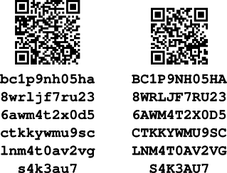

Keys and Addresses
Alice wants to pay Bob, but the thousands of Bitcoin full nodes who will verify her transaction don’t know who Alice or Bob are—and we want to keep it that way to protect their privacy. Alice needs to communicate that Bob should receive some of her bitcoins without tying any aspect of that transaction to Bob’s real-world identity or to other Bitcoin payments that Bob receives. The method Alice uses must ensure that only Bob can further spend the bitcoins he receives.
The original Bitcoin paper describes a very simple scheme for achieving those goals, shown in Transaction chain from original Bitcoin paper..
A receiver like Bob accepts bitcoins to a public key in a transaction that is signed by the spender (like Alice). The bitcoins that Alice is spending had been previously received to one of her public keys, and she uses the corresponding private key to generate her signature. Full nodes can verify that Alice’s signature commits to the output of a hash function that itself commits to Bob’s public key and other transaction details.
We’ll examine public keys, private keys, signatures, and hash functions in this chapter, and then use all of them together to describe the addresses used by modern Bitcoin software.
Public Key Cryptography
Public key cryptography was invented in the 1970s and is a mathematical foundation for modern computer and information security.
Since the invention of public key cryptography, several suitable mathematical functions, such as prime number exponentiation and elliptic curve multiplication, have been discovered. These mathematical functions are easy to calculate in one direction and infeasible to calculate in the opposite direction using the computers and algorithms available today. Based on these mathematical functions, cryptography enables the creation of unforgeable digital signatures. Bitcoin uses elliptic curve addition and multiplication as the basis for its cryptography.
In Bitcoin, we can use public key cryptography to create a key pair that controls access to bitcoins. The key pair consists of a private key and a public key derived from the private key. The public key is used to receive funds, and the private key is used to sign transactions to spend the funds.
There is a mathematical relationship between the public and the private key that allows the private key to be used to generate signatures on messages. These signatures can be validated against the public key without revealing the private key.
|
Tip
|
In some wallet implementations, the private and public keys are stored together as a key pair for convenience. However, the public key can be calculated from the private key, so storing only the private key is also possible. |
A Bitcoin wallet contains a collection of key pairs, each consisting of a private key and a public key. The private key (k) is a number, usually derived from a number picked at random. From the private key, we use elliptic curve multiplication, a one-way cryptographic function, to generate a public key (K).
Private Keys
A private key is simply a number, picked at random. Control over the private key is the root of user control over all funds associated with the corresponding Bitcoin public key. The private key is used to create signatures that are used to spend bitcoins by proving control of funds used in a transaction. The private key must remain secret at all times because revealing it to third parties is equivalent to giving them control over the bitcoins secured by that key. The private key must also be backed up and protected from accidental loss because if it’s lost, it cannot be recovered and the funds secured by it are forever lost too.
|
Tip
|
A Bitcoin private key is just a number. You can pick your private keys randomly using just a coin, pencil, and paper: toss a coin 256 times and you have the binary digits of a random private key you can use in a Bitcoin wallet. The public key can then be generated from the private key. Be careful, though, as any process that’s less than completely random can significantly reduce the security of your private key and the bitcoins it controls. |
The first and most important step in generating keys is to find a secure source of randomness (which computer scientists call entropy). Creating a Bitcoin key is almost the same as "Pick a number between 1 and 2256." The exact method you use to pick that number does not matter as long as it is not predictable or repeatable. Bitcoin software uses cryptographically secure random number generators to produce 256 bits of entropy.
More precisely, the private key can be any number between 0 and n - 1 inclusive, where n is a constant (n = 1.1578 × 1077, slightly less than 2256) defined as the order of the elliptic curve used in Bitcoin (see Elliptic Curve Cryptography Explained). To create such a key, we randomly pick a 256-bit number and check that it is less than n. In programming terms, this is usually achieved by feeding a larger string of random bits, collected from a cryptographically secure source of randomness, into the SHA256 hash algorithm, which will conveniently produce a 256-bit value that can be interpreted as a number. If the result is less than n, we have a suitable private key. Otherwise, we simply try again with another random number.
|
Warning
|
Do not write your own code to create a random number or use a "simple" random number generator offered by your programming language. Use a cryptographically secure pseudorandom number generator (CSPRNG) with a seed from a source of sufficient entropy. Study the documentation of the random number generator library you choose to make sure it is cryptographically secure. Correct implementation of the CSPRNG is critical to the security of the keys. |
The following is a randomly generated private key (k) shown in hexadecimal format (256 bits shown as 64 hexadecimal digits, each 4 bits):
1E99423A4ED27608A15A2616A2B0E9E52CED330AC530EDCC32C8FFC6A526AEDD
|
Tip
|
The size of Bitcoin’s private key space (2256) is an unfathomably large number. It is approximately 1077 in decimal. For comparison, the visible universe is estimated to contain 1080 atoms. |
Elliptic Curve Cryptography Explained
Elliptic curve cryptography (ECC) is a type of asymmetric or public key cryptography based on the discrete logarithm problem as expressed by addition and multiplication on the points of an elliptic curve.
An elliptic curve. is an example of an elliptic curve, similar to that used by Bitcoin.
Bitcoin uses a specific elliptic curve and set of mathematical constants, as defined in a standard called secp256k1, established by the National Institute of Standards and Technology (NIST). The secp256k1 curve is defined by the following function, which produces an elliptic curve:
or
The mod p (modulo prime number p) indicates that this curve is over a finite field of prime order p, also written as \(\( \mathbb{F}_p\)\), where p = 2256 – 232 – 29 – 28 – 27 – 26 – 24 – 1, a very large prime number.
Because this curve is defined over a finite field of prime order instead of over the real numbers, it looks like a pattern of dots scattered in two dimensions, which makes it difficult to visualize. However, the math is identical to that of an elliptic curve over real numbers. As an example, Elliptic curve cryptography: visualizing an elliptic curve over F(p), with p=17. shows the same elliptic curve over a much smaller finite field of prime order 17, showing a pattern of dots on a grid. The secp256k1 Bitcoin elliptic curve can be thought of as a much more complex pattern of dots on a unfathomably large grid.
So, for example, the following is a point P with coordinates (x, y) that is a point on the secp256k1 curve:
P =
(55066263022277343669578718895168534326250603453777594175500187360389116729240,
32670510020758816978083085130507043184471273380659243275938904335757337482424)Using Python to confirm that this point is on the elliptic curve shows how you can check this yourself using Python.
Python 3.10.6 (main, Nov 14 2022, 16:10:14) [GCC 11.3.0] on linux
Type "help", "copyright", "credits" or "license" for more information.
> p = 115792089237316195423570985008687907853269984665640564039457584007908834671663
> x = 55066263022277343669578718895168534326250603453777594175500187360389116729240
> y = 32670510020758816978083085130507043184471273380659243275938904335757337482424
> (x ** 3 + 7 - y**2) % p
0In elliptic curve math, there is a point called the "point at infinity," which roughly corresponds to the role of zero in addition. On computers, it’s sometimes represented by x = y = 0 (which doesn’t satisfy the elliptic curve equation, but it’s an easy separate case that can be checked).
There is also a + operator, called "addition," which has some properties similar to the traditional addition of real numbers that gradeschool children learn. Given two points P1 and P2 on the elliptic curve, there is a third point P3 = P1 + P2, also on the elliptic curve.
Geometrically, this third point P3 is calculated by drawing a line between P1 and P2. This line will intersect the elliptic curve in exactly one additional place. Call this point P3' = (x, y). Then reflect in the x-axis to get P3 = (x, –y).
There are a couple of special cases that explain the need for the "point at infinity."
If P1 and P2 are the same point, the line "between" P1 and P2 should extend to be the tangent on the curve at this point P1. This tangent will intersect the curve in exactly one new point. You can use techniques from calculus to determine the slope of the tangent line. These techniques curiously work, even though we are restricting our interest to points on the curve with two integer coordinates!
In some cases (i.e., if P1 and P2 have the same x values but different y values), the tangent line will be exactly vertical, in which case P3 = "point at infinity."
If P1 is the "point at infinity," then P1 + P2 = P2. Similarly, if P2 is the point at infinity, then P1 + P2 = P1. This shows how the point at infinity plays the role of zero.
It turns out that + is associative, which means that (A + B) + C = A + (B + C). That means we can write A + B + C without parentheses and without ambiguity.
Now that we have defined addition, we can define multiplication in the standard way that extends addition. For a point P on the elliptic curve, if k is a whole number, then kP = P + P + P + … + P (k times). Note that k is sometimes confusingly called an "exponent" in this case.
Public Keys
The public key is calculated from the private key using elliptic curve multiplication, which is irreversible: K = k × G, where k is the private key, G is a constant point called the generator point, and K is the resulting public key. The reverse operation, known as "finding the discrete logarithm"—calculating k if you know K—is as difficult as trying all possible values of k (i.e., a brute-force search). Before we demonstrate how to generate a public key from a private key, let’s look at elliptic curve cryptography in a bit more detail.
|
Tip
|
Elliptic curve multiplication is a type of function that cryptographers call a "trap door" function: it is easy to do in one direction (multiplication) and impossible to do in the reverse direction (division). Someone with a private key can easily create the public key and then share it with the world knowing that no one can reverse the function and calculate the private key from the public key. This mathematical trick becomes the basis for unforgeable and secure digital signatures that prove control over bitcoin funds. |
Starting with a private key in the form of a randomly generated number k, we multiply it by a predetermined point on the curve called the generator point G to produce another point somewhere else on the curve, which is the corresponding public key K. The generator point is specified as part of the secp256k1 standard and is always the same for all keys in bitcoin:
where k is the private key, G is the generator point, and K is the resulting public key, a point on the curve. Because the generator point is always the same for all Bitcoin users, a private key k multiplied with G will always result in the same public key K. The relationship between k and K is fixed but can only be calculated in one direction, from k to K. That’s why a Bitcoin public key (K) can be shared with anyone and does not reveal the user’s private key (k).
|
Tip
|
A private key can be converted into a public key, but a public key cannot be converted back into a private key because the math only works one way. |
Implementing the elliptic curve multiplication, we take the private key k generated previously and multiply it with the generator point G to find the public key K:
K = 1E99423A4ED27608A15A2616A2B0E9E52CED330AC530EDCC32C8FFC6A526AEDD × GPublic key K is defined as a point K = (x, y):
where,
x = F028892BAD7ED57D2FB57BF33081D5CFCF6F9ED3D3D7F159C2E2FFF579DC341A y = 07CF33DA18BD734C600B96A72BBC4749D5141C90EC8AC328AE52DDFE2E505BDB
To visualize multiplication of a point with an integer, we will use the simpler elliptic curve over real numbers—remember, the math is the same. Our goal is to find the multiple kG of the generator point G, which is the same as adding G to itself, k times in a row. In elliptic curves, adding a point to itself is the equivalent of drawing a tangent line on the point and finding where it intersects the curve again, then reflecting that point on the x-axis.
Elliptic curve cryptography: visualizing the multiplication of a point G by an integer k on an elliptic curve. shows the process for deriving G, 2G, 4G, as a geometric operation on the curve.
|
Tip
|
Many Bitcoin implementations use the libsecp256k1 cryptographic library to do the elliptic curve math. |

Output and Input Scripts
Although the illustration from the original Bitcoin paper, Transaction chain from original Bitcoin paper., shows public keys (pubkeys) and signatures (sigs) being used directly, the first version of Bitcoin instead had payments sent to a field called output script and had spends of those bitcoins authorized by a field called input script. These fields allow additional operations to be performed in addition to (or instead of) verifying that a signature corresponds to a public key. For example, an output script can contain two public keys and require two corresponding signatures be placed in the spending input script.
Later, in [tx_script], we’ll learn about scripts in detail. For now, all we need to understand is that bitcoins are received to an output script that acts like a public key, and bitcoin spending is authorized by an input script that acts like a signature.
IP Addresses: The Original Address for Bitcoin (P2PK)
We’ve established that Alice can pay Bob by assigning some of her bitcoins to one of Bob’s public keys. But how does Alice get one of Bob’s public keys? Bob could just give her a copy, but let’s look again at the public key we worked with in Public Keys. Notice that it’s quite long. Imagine Bob trying to read that to Alice over the phone:
x = F028892BAD7ED57D2FB57BF33081D5CFCF6F9ED3D3D7F159C2E2FFF579DC341A y = 07CF33DA18BD734C600B96A72BBC4749D5141C90EC8AC328AE52DDFE2E505BDB
Instead of direct public key entry, the earliest version of Bitcoin software allowed a spender to enter the receiver’s IP address, as shown in Early send screen for Bitcoin via The Internet Archive.. This feature was later removed—there are many problems with using IP addresses—but a quick description of it will help us better understand why certain features may have been added to the Bitcoin protocol.
If Alice entered Bob’s IP address in Bitcoin 0.1, her full node would establish a connection with his full node and receive a new public key from Bob’s wallet that his node had never previously given anyone. This being a new public key was important to ensure that different transactions paying Bob couldn’t be connected together by someone looking at the blockchain and noticing that all of the transactions paid the same public key.
Using the public key her node received from Bob’s node, Alice’s wallet would construct a transaction output paying a very simple output script:
<Bob's public key> OP_CHECKSIG
Bob would later be able to spend that output with an input script consisting entirely of his signature:
<Bob's signature>
To figure out what an output and input script are doing, you can combine them together (input script first) and then note that each piece of data (shown in angle brackets) is placed at the top of a list of items, called a stack. When an operation code (opcode) is encountered, it uses items from the stack, starting with the topmost items. Let’s look at how that works by beginning with the combined script:
<Bob's signature> <Bob's public key> OP_CHECKSIG
For this script, Bob’s signature is put on the stack, then Bob’s public key is placed on top of it. The OP_CHECKSIG operation consumes two elements, starting with the public key and followed by the signature, removing them from the stack. It verifies the signature corresponds to the public key and also commits to (signs) the various fields in the transaction. If the signature is correct, OP_CHECKSIG replaces itself on the stack with the value 1; if the signature was not correct, it replaces itself with a 0. If there’s a nonzero item on top of the stack at the end of evaluation, the script passes. If all scripts in a transaction pass, and all of the other details about the transaction are valid, then full nodes will consider the transaction to be valid.
In short, the preceding script uses the same public key and signature described in the original paper but adds in the complexity of two script fields and an opcode. That seems like extra work here, but we’ll begin to see the benefits when we look at the following section.
This type of output is known today as pay to public key, or P2PK for short. It was never widely used for payments, and no widely used program has supported IP address payments for almost a decade.
Legacy Addresses for P2PKH
Entering the IP address of the person you want to pay has a number of advantages, but it also has a number of downsides. One particular downside is that the receiver needs their wallet to be online at their IP address, and it needs to be accessible from the outside world. For a lot of people, that isn’t an option. They turn their computers off at night, their laptops go to sleep, they’re behind firewalls, or they’re using Network Address Translation (NAT).
This brings us back to the problem of receivers like Bob having to give spenders like Alice a long public key. The shortest version of Bitcoin public keys known to the developers of early Bitcoin were 65 bytes, the equivalent of 130 characters when written in hexadecimal. However, Bitcoin already contains several data structures much larger than 65 bytes that need to be securely referenced in other parts of Bitcoin using the smallest amount of data that was secure.
Bitcoin accomplishes that with a hash function, a function that takes a potentially large amount of data, scrambles it (hashes it), and outputs a fixed amount of data. A cryptographic hash function will always produce the same output when given the same input, and a secure function will also make it impractical for somebody to choose a different input that produces a previously-seen output. That makes the output a commitment to the input. It’s a promise that, in practice, only input x will produce output X.
For example, imagine I want to ask you a question and also give you my answer in a form that you can’t read immediately. Let’s say the question is, "in what year did Satoshi Nakamoto start working on Bitcoin?" I’ll give you a commitment to my answer in the form of output from the SHA256 hash function, the function most commonly used in Bitcoin:
94d7a772612c8f2f2ec609d41f5bd3d04a5aa1dfe3582f04af517d396a302e4e
Later, after you tell me your guess to the answer of the question, I can reveal my answer and prove to you that my answer, as input to the hash function, produces exactly the same output I gave you earlier:
$ echo "2007. He said about a year and a half before Oct 2008" | sha256sum 94d7a772612c8f2f2ec609d41f5bd3d04a5aa1dfe3582f04af517d396a302e4e
Now imagine that we ask Bob the question, "what is your public key?" Bob can use a hash function to give us a cryptographically secure commitment to his public key. If he later reveals his key, and we verify it produces the same commitment he previously gave us, we can be sure it was the exact same key that was used to create that earlier commitment.
The SHA256 hash function is considered to be very secure and produces 256 bits (32 bytes) of output, less than half the size of original Bitcoin public keys. However, there are other slightly less secure hash functions that produce smaller output, such as the RIPEMD-160 hash function whose output is 160 bits (20 bytes). For reasons Satoshi Nakamoto never stated, the original version of Bitcoin made commitments to public keys by first hashing the key with SHA256 and then hashing that output with RIPEMD-160; this produced a 20-byte commitment to the public key.
We can look at that algorithmically. Starting with the public key K, we compute the SHA256 hash and then compute the RIPEMD-160 hash of the result, producing a 160-bit (20-byte) number:
where K is the public key and A is the resulting commitment.
Now that we understand how to make a commitment to a public key, we need to figure out how to use it in a transaction. Consider the following output script:
OP_DUP OP_HASH160 <Bob's commitment> OP_EQUAL OP_CHECKSIG
And also the following input script:
<Bob's signature> <Bob's public key>
Together, they form the following script:
<sig> <pubkey> OP_DUP OP_HASH160 <commitment> OP_EQUALVERIFY OP_CHECKSIG
As we did in IP Addresses: The Original Address for Bitcoin (P2PK), we start putting items on the stack. Bob’s signature goes on first; his public key is then placed on top of the stack. The OP_DUP operation duplicates the top item, so the top and second-to-top item on the stack are now both Bob’s public key. The OP_HASH160 operation consumes (removes) the top public key and replaces it with the result of hashing it with RIPEMD160(SHA256(K)), so now the top of the stack is a hash of Bob’s public key. Next, the commitment to Bob’s public key is added to the top of the stack. The OP_EQUALVERIFY operation consumes the top two items and verifies that they are equal; that should be the case if the public key Bob provided in the input script is the same public key used to create the commitment in the output script that Alice paid. If OP_EQUALVERIFY fails, the whole script fails. Finally, we’re left with a stack containing just Bob’s signature and his public key; the OP_CHECKSIG opcode verifies they correspond with each other and that the signature commits to the transaction.
Although this process of paying to a public key hash (P2PKH) may seem convoluted, it allows Alice’s payment to Bob to contain only a 20 byte commitment to his public key instead of the key itself, which would’ve been 65 bytes in the original version of Bitcoin. That’s a lot less data for Bob to have to communicate to Alice.
However, we haven’t yet discussed how Bob gets those 20 bytes from his Bitcoin wallet to Alice’s wallet. There are commonly used encodings for byte values, such as hexadecimal, but any mistake made in copying a commitment would result in the bitcoins being sent to an unspendable output, causing them to be lost forever. In the next section, we’ll look at compact encoding and reliable checksums.
Base58check Encoding
In order to represent long numbers in a compact way, using fewer symbols, many computer systems use mixed-alphanumeric representations with a base (or radix) higher than 10. For example, whereas the traditional decimal system uses 10 numerals, 0 through 9, the hexadecimal system uses 16, with the letters A through F as the six additional symbols. A number represented in hexadecimal format is shorter than the equivalent decimal representation. Even more compact, base64 representation uses 26 lowercase letters, 26 capital letters, 10 numerals, and 2 more characters such as "+" and "/" to transmit binary data over text-based media such as email.
Base58 is a similar encoding to base64, using upper- and lowercase letters and numbers, but omitting some characters that are frequently mistaken for one another and can appear identical when displayed in certain fonts. Specifically, base58 is base64 without the 0 (number zero), O (capital o), l (lower L), I (capital i), and the symbols "+" and "/." Or, more simply, it is a set of lowercase and capital letters and numbers without the four (0, O, l, I) just mentioned. Bitcoin’s base58 alphabet shows the full base58 alphabet.
123456789ABCDEFGHJKLMNPQRSTUVWXYZabcdefghijkmnopqrstuvwxyz
To add extra security against typos or transcription errors, base58check includes a checksum encoded in the base58 alphabet. The checksum is an additional four bytes added to the end of the data that is being encoded. The checksum is derived from the hash of the encoded data and can therefore be used to detect transcription and typing errors. When presented with base58check code, the decoding software will calculate the checksum of the data and compare it to the checksum included in the code. If the two do not match, an error has been introduced and the base58check data is invalid. This prevents a mistyped Bitcoin address from being accepted by the wallet software as a valid destination, an error that would otherwise result in loss of funds.
To convert data (a number) into a base58check format, we first add a prefix to the data, called the "version byte," which serves to easily identify the type of data that is encoded. For example, the prefix zero (0x00 in hex) indicates that the data should be used as the commitment (hash) in a legacy P2PKH output script. A list of common version prefixes is shown in [base58check_versions].
Next, we compute the "double-SHA" checksum, meaning we apply the SHA256 hash-algorithm twice on the previous result (the prefix concatenated with the data):
checksum = SHA256(SHA256(prefix||data))
From the resulting 32-byte hash (hash-of-a-hash), we take only the first four bytes. These four bytes serve as the error-checking code, or checksum. The checksum is appended to the end.
The result is composed of three items: a prefix, the data, and a checksum. This result is encoded using the base58 alphabet described previously. Base58check encoding: a base58, versioned, and checksummed format for unambiguously encoding bitcoin data. illustrates the base58check encoding process.

In Bitcoin, other data besides public key commitments are presented to the user in base58check encoding to make that data compact, easy to read, and easy to detect errors. The version prefix in base58check encoding is used to create easily distinguishable formats, which when encoded in base58 contain specific characters at the beginning of the base58check-encoded payload. These characters make it easy for humans to identify the type of data that is encoded and how to use it. This is what differentiates, for example, a base58check-encoded Bitcoin address that starts with a 1 from a base58check-encoded private key wallet import format (WIF) that starts with a 5. Some example version prefixes and the resulting base58 characters are shown in #base58check_versions.
| Type | Version prefix (hex) | Base58 result prefix |
|---|---|---|
Address for pay to public key hash (P2PKH) |
0x00 |
1 |
Address for pay to script hash (P2SH) |
0x05 |
3 |
Testnet Address for P2PKH |
0x6F |
m or n |
Testnet Address for P2SH |
0xC4 |
2 |
Private Key WIF |
0x80 |
5, K, or L |
BIP32 Extended Public Key |
0x0488B21E |
xpub |
Combining public keys, hash-based commitments, and base58check encoding, Public key to Bitcoin address: conversion of a public key to a Bitcoin address. illustrates the conversion of a public key into a Bitcoin address.
Compressed Public Keys
When Bitcoin was first authored, its developers only knew how to create 65-byte public keys. However, a later developer became aware of an alternative encoding for public keys that used only 33 bytes and which was backward compatible with all Bitcoin full nodes at the time, so there was no need to change the Bitcoin protocol. Those 33-byte public keys are known as compressed public keys, and the original 65-byte keys are known as uncompressed public keys. Using smaller public keys results in smaller transactions, allowing more payments to be made in the same block.
As we saw in the section Public Keys, a public key is a point (x, y) on an elliptic curve. Because the curve expresses a mathematical function, a point on the curve represents a solution to the equation and, therefore, if we know the x coordinate, we can calculate the y coordinate by solving the equation y2 mod p = (x3 + 7) mod p. That allows us to store only the x coordinate of the public key point, omitting the y coordinate and reducing the size of the key and the space required to store it by 256 bits. An almost 50% reduction in size in every transaction adds up to a lot of data saved over time!
Here is the public key generated by the private key we created in Public Keys:
x = F028892BAD7ED57D2FB57BF33081D5CFCF6F9ED3D3D7F159C2E2FFF579DC341A y = 07CF33DA18BD734C600B96A72BBC4749D5141C90EC8AC328AE52DDFE2E505BDB
Here’s the same public key shown as a 520-bit number (130 hex digits) with the prefix 04 followed by x and then y coordinates, as 04 x y:
K = 04F028892BAD7ED57D2FB57BF33081D5CFCF6F9ED3D3D7F159C2E2FFF579DC341A\
07CF33DA18BD734C600B96A72BBC4749D5141C90EC8AC328AE52DDFE2E505BDB
Whereas uncompressed public keys have a prefix of 04, compressed public keys start with either a 02 or a 03 prefix. Let’s look at why there are two possible prefixes: because the left side of the equation is y2, the solution for y is a square root, which can have a positive or negative value. Visually, this means that the resulting y coordinate can be above or below the x-axis. As you can see from the graph of the elliptic curve in An elliptic curve., the curve is symmetric, meaning it is reflected like a mirror by the x-axis. So, while we can omit the y coordinate, we have to store the sign of y (positive or negative); in other words, we have to remember if it was above or below the x-axis because each of those options represents a different point and a different public key. When calculating the elliptic curve in binary arithmetic on the finite field of prime order p, the y coordinate is either even or odd, which corresponds to the positive/negative sign as explained earlier. Therefore, to distinguish between the two possible values of y, we store a compressed public key with the prefix 02 if the y is even, and 03 if it is odd, allowing the software to correctly deduce the y coordinate from the x coordinate and uncompress the public key to the full coordinates of the point. Public key compression is illustrated in Public key compression..
Here’s the same public key generated in Public Keys, shown as a compressed public key stored in 264 bits (66 hex digits) with the prefix 03 indicating the y coordinate is odd:
K = 03F028892BAD7ED57D2FB57BF33081D5CFCF6F9ED3D3D7F159C2E2FFF579DC341A
This compressed public key corresponds to the same private key, meaning it is generated from the same private key. However, it looks different from the uncompressed public key. More importantly, if we convert this compressed public key to a commitment using the HASH160 function (RIPEMD160(SHA256(K))), it will produce a different commitment than the uncompressed public key, leading to a different address. This can be confusing because it means that a single private key can produce a public key expressed in two different formats (compressed and uncompressed) that produce two different Bitcoin addresses. However, the private key is identical for both Bitcoin addresses.
Compressed public keys are now the default in almost all Bitcoin software and were required when using certain new features added in later protocol upgrades.
However, some software still needs to support uncompressed public keys, such as a wallet application importing private keys from an older wallet. When the new wallet scans the blockchain for old P2PKH outputs and inputs, it needs to know whether to scan the 65-byte keys (and commitments to those keys) or 33-byte keys (and their commitments). Failure to scan for the correct type can lead to the user not being able to spend their full balance. To resolve this issue, when private keys are exported from a wallet, the WIF that is used to represent them is implemented slightly differently in newer Bitcoin wallets to indicate that these private keys have been used to produce compressed public keys.
Legacy Pay to Script Hash (P2SH)
As we’ve seen in preceding sections, someone receiving bitcoins (like Bob) can require that payments to him contain certain constraints in their output script. Bob will need to fulfill those constraints using an input script when he spends those bitcoins. In IP Addresses: The Original Address for Bitcoin (P2PK), the constraint was simply that the input script needed to provide an appropriate signature. In Legacy Addresses for P2PKH, an appropriate public key also needed to be provided.
For a spender (like Alice) to place the constraints Bob wants in the output script she uses to pay him, Bob needs to communicate those constraints to her. This is similar to the problem of Bob needing to communicate his public key to her. Like that problem, where public keys can be fairly large, the constraints Bob uses can also be quite large—potentially thousands of bytes. That's not only thousands of bytes that need to be communicated to Alice, but thousands of bytes for which she needs to pay transaction fees every time she wants to spend money to Bob. However, the solution of using hash functions to create small commitments to large amounts of data also applies here.
The BIP16 upgrade to the Bitcoin protocol in 2012 allows an output script to commit to a redemption script (redeem script). When Bob spends his bitcoins, his input script needs to provide a redeem script that matches the commitment and also any data necessary to satisfy the redeem script (such as signatures). Let’s start by imagining Bob wants to require two signatures to spend his bitcoins, one signature from his desktop wallet and one from a hardware signing device. He puts those conditions into a redeem script:
<public key 1> OP_CHECKSIGVERIFY <public key 2> OP_CHECKSIG
He then creates a commitment to the redeem script using the same HASH160 mechanism used for P2PKH commitments, RIPEMD160(SHA256(script)). That commitment is placed into the output script using a special template:
OP_HASH160 <commitment> OP_EQUAL
|
Warning
|
When using pay to script hash (P2SH), you must use the specific P2SH template with no extra data or conditions in the output script. If the output script is not exactly OP_HASH160 <20 bytes> OP_EQUAL, the redeem script will not be used and any bitcoins may either be unspendable or spendable by anyone (meaning anyone can take them). |
When Bob goes to spend the payment he received to the commitment for his script, he uses an input script that includes the redeem script, with it serialized as a single data element. He also provides the signatures he needs to satisfy the redeem script, putting them in the order that they will be consumed by the opcodes:
<signature2> <signature1> <redeem script>
When Bitcoin full nodes receive Bob’s spend, they’ll verify that the serialized redeem script will hash to the same value as the commitment. Then they’ll replace it on the stack with its deserialized value:
<signature2> <signature1> <pubkey1> OP_CHECKSIGVERIFY <pubkey2> OP_CHECKSIG
The script is executed and, if it passes and all of the other transaction details are correct, the transaction is valid.
Addresses for P2SH are also created with base58check. The version prefix is set to 5, which results in an encoded address starting with a 3. An example of a P2SH address is 3F6i6kwkevjR7AsAd4te2YB2zZyASEm1HM.
|
Tip
|
P2SH is not necessarily the same as a multisignature transaction. A P2SH address most often represents a multisignature script, but it might also represent a script encoding other types of transactions. |
P2PKH and P2SH are the only two script templates used with base58check encoding. They are now known as legacy addresses and have become less common over time. Legacy addresses were supplanted by the bech32 family of addresses.
Bech32 Addresses
In 2017, the Bitcoin protocol was upgraded. When the upgrade is used, it prevents transaction identifiers (txids) from being changed without the consent of a spending user (or a quorum of signers when multiple signatures are required). The upgrade, called segregated witness (or segwit for short), also provided additional capacity for transaction data in blocks and several other benefits. However, users wanting direct access to segwit’s benefits had to accept payments to new output scripts.
As mentioned in [p2sh], one of the advantages of the P2SH output type was that a spender (such as Alice) didn’t need to know the details of the script the receiver (such as Bob) used. The segwit upgrade was designed to use this mechanism, allowing users to immediately begin accessing many of the new benefits by using a P2SH address. But for Bob to gain access to all of the benefits, he would need Alice’s wallet to pay him using a different type of script. That would require Alice’s wallet to upgrade to support the new scripts.
At first, Bitcoin developers proposed BIP142, which would continue using base58check with a new version byte, similar to the P2SH upgrade. But getting all wallets to upgrade to new scripts with a new base58check version was expected to require almost as much work as getting them to upgrade to an entirely new address format, so several Bitcoin contributors set out to design the best possible address format. They identified several problems with base58check:
-
Its mixed-case presentation made it inconvenient to read aloud or transcribe. Try reading one of the legacy addresses in this chapter to a friend who you have transcribe it. Notice how you have to prefix every letter with the words "uppercase" and "lowercase." Also, note when you review their writing that the uppercase and lowercase versions of some letters can look similar in many people’s handwriting.
-
It can detect errors, but it can’t help users correct those errors. For example, if you accidentally transpose two characters when manually entering an address, your wallet will almost certainly warn that a mistake exists, but it won’t help you figure out where the error is located. It might take you several frustrating minutes to eventually discover the mistake.
-
A mixed-case alphabet also requires extra space to encode in QR codes, which are commonly used to share addresses and invoices between wallets. That extra space means QR codes need to be larger at the same resolution or they become harder to scan quickly.
-
It requires every spender wallet upgrade to support new protocol features like P2SH and segwit. Although the upgrades themselves might not require much code, experience shows that many wallet authors are busy with other work and can sometimes delay upgrading for years. This adversely affects everyone who wants to use the new features.
The developers working on an address format for segwit found solutions for each of these problems in a new address format called bech32 (pronounced with a soft "ch", as in "besh thirty-two"). The "bech" stands for BCH, the initials of the three individuals who discovered the cyclic code in 1959 and 1960 upon which bech32 is based. The "32" stands for the number of characters in the bech32 alphabet (similar to the 58 in base58check):
-
Bech32 uses only numbers and a single case of letters (preferably rendered in lowercase). Despite its alphabet being almost half the size of the base58check alphabet, a bech32 address for a pay to witness public key hash (P2WPKH) script is only slightly longer than a legacy address for an equivalent P2PKH script.
-
Bech32 can both detect and help correct errors. In an address of an expected length, it is mathematically guaranteed to detect any error affecting four characters or less; that’s more reliable than base58check. For longer errors, it will fail to detect them less than one time in a billion, which is roughly the same reliability as base58check. Even better, for an address typed with just a few errors, it can tell the user where those errors occurred, allowing them to quickly correct minor transcription mistakes. See Bech32 typo detection for an example of an address entered with errors.
Example 3. Bech32 typo detectionAddress: bc1p9nh05ha8wrljf7ru236awn4t2x0d5ctkkywmv9sclnm4t0av2vgs4k3au7
Detected errors shown in bold and underlined. Generated using the bech32 address decoder demo.
-
Bech32 is preferably written with only lowercase characters, but those lowercase characters can be replaced with uppercase characters before encoding an address in a QR code. This allows the use of a special QR encoding mode that uses less space. Notice the difference in size and complexity of the two QR codes for the same address in The same bech32 address QR encoded in lowercase and uppercase..
Figure 9. The same bech32 address QR encoded in lowercase and uppercase. -
Bech32 takes advantage of an upgrade mechanism designed as part of segwit to make it possible for spender wallets to be able to pay output types that aren’t in use yet. The goal was to allow developers to build a wallet today that allows spending to a bech32 address and have that wallet remain able to spend to bech32 addresses for users of new features added in future protocol upgrades. It was hoped that we might never again need to go through the system-wide upgrade cycles necessary to allow people to fully use P2SH and segwit.
Problems with Bech32 Addresses
Bech32 addresses would have been a success in every area except for one problem. The mathematical guarantees about their ability to detect errors only apply if the length of the address you enter into a wallet is the same length of the original address. If you add or remove any characters during transcription, the guarantee doesn’t apply and your wallet may spend funds to a wrong address. However, even without the guarantee, it was thought that it would be very unlikely that a user adding or removing characters would produce a string with a valid checksum, ensuring users' funds were safe.
Unfortunately, the choice for one of the constants in the bech32 algorithm just happened to make it very easy to add or remove the letter "q" in the penultimate position of an address that ends with the letter "p." In those cases, you can also add or remove the letter "q" multiple times. This will be caught by the checksum some of the time, but it will be missed far more often than the one-in-a-billion expectations for bech32’s substitution errors. For an example, see Extending the length of bech32 address without invalidating its checksum.
Intended bech32 address: bc1pqqqsq9txsqp Incorrect addresses with a valid checksum: bc1pqqqsq9txsqqqqp bc1pqqqsq9txsqqqqqqp bc1pqqqsq9txsqqqqqqqqp bc1pqqqsq9txsqqqqqqqqqp bc1pqqqsq9txsqqqqqqqqqqqp
For the initial version of segwit (version 0), this wasn’t a practical concern. Only two valid lengths were defined for v0 segwit outputs: 22 bytes and 34 bytes. Those correspond to bech32 addresses that are 42 characters or 62 characters long, so someone would need to add or remove the letter "q" from the penultimate position of a bech32 address 20 times in order to send money to an invalid address without a wallet being able to detect it. However, it would become a problem for users in the future if a segwit-based upgrade were ever to be implemented.
Bech32m
Although bech32 worked well for segwit v0, developers didn’t want to unnecessarily constrain output sizes in later versions of segwit. Without constraints, adding or removing a single "q" in a bech32 address could result in a user accidentally sending their money to an output that was either unspendable or spendable by anyone (allowing those bitcoins to be taken by anyone). Developers exhaustively analyzed the bech32 problem and found that changing a single constant in their algorithm would eliminate the problem, ensuring that any insertion or deletion of up to five characters will only fail to be detected less often than one time in a billion.
The version of bech32 with a single different constant is known as bech32 modified (bech32m). All of the characters in bech32 and bech32m addresses for the same underlying data will be identical except for the last six (the checksum). That means a wallet will need to know which version is in use in order to validate the checksum, but both address types contain an internal version byte that makes determining that easy.
To work with both bech32 and bech32m, we’ll look at the encoding and parsing rules for bech32m Bitcoin addresses since they encompass the ability to parse bech32 addresses and are the current recommended address format for Bitcoin wallets.
Bech32m addresses start with a human readable part (HRP). There are rules in BIP173 for creating your own HRPs, but for Bitcoin you only need to know about the HRPs already chosen, shown in [bech32_hrps_for_bitcoin].
| HRPs | Network |
|---|---|
bc |
Bitcoin mainnet |
tb |
Bitcoin testnet |
The HRP is followed by a separator, the number "1." Earlier proposals for a protocol separator used a colon but some operating systems and applications that allow a user to double-click a word to highlight it for copy and pasting won’t extend the highlighting to and past a colon. A number ensured double-click highlighting would work with any program that supports bech32m strings in general (which include other numbers). The number "1" was chosen because bech32 strings don’t otherwise use it in order to prevent accidental transliteration between the number "1" and the lowercase letter "l."
The other part of a bech32m address is called the "data part." There are three elements to this part:
- Witness version
-
A single byte that encodes as a single character in a bech32m Bitcoin address immediately following the separator. This letter represents the segwit version. The letter "q" is the encoding of "0" for segwit v0, the initial version of segwit where bech32 addresses were introduced. The letter "p" is the encoding of "1" for segwit v1 (also called taproot) where bech32m began to be used. There are seventeen possible versions of segwit and it’s required for Bitcoin that the first byte of a bech32m data part decode to the number 0 through 16 (inclusive).
- Witness program
-
From 2 to 40 bytes. For segwit v0, this witness program must be either 20 or 32 bytes; no other length is valid. For segwit v1, the only defined length as of this writing is 32 bytes but other lengths may be defined later.
- Checksum
-
Exactly 6 characters. This is created using a BCH code, a type of error correction code (although for Bitcoin addresses, we’ll see later that it’s essential to use the checksum only for error detection—not correction).
Let’s illustrate these rules by walking through an example of creating bech32 and bech32m addresses. For all of the following examples, we’ll use the bech32m reference code for Python.
We’ll start by generating four output scripts, one for each of the different segwit outputs in use at the time of publication, plus one for a future segwit version that doesn’t yet have a defined meaning. The scripts are listed in [scripts_for_diff_segwit_outputs].
| Output type | Example script |
|---|---|
P2WPKH |
|
P2WSH |
|
P2TR |
|
Future Example |
|
For the P2WPKH output, the witness program contains a commitment constructed in exactly the same way as the commitment for a P2PKH output seen in Legacy Addresses for P2PKH. A public key is passed into a SHA256 hash function. The resultant 32-byte digest is then passed into a RIPEMD-160 hash function. The digest of that function (the commitment) is placed in the witness program.
For the pay to witness script hash (P2WSH) output, we don’t use the P2SH algorithm. Instead we take the script, pass it into a SHA256 hash function, and use the 32-byte digest of that function in the witness program. For P2SH, the SHA256 digest was hashed again with RIPEMD-160, but that may not be secure in some cases; for details, see P2SH Collision Attacks. A result of using SHA256 without RIPEMD-160 is that P2WSH commitments are 32 bytes (256 bits) instead of 20 bytes (160 bits).
For the pay-to-taproot (P2TR) output, the witness program is a point on the secp256k1 curve. It may be a simple public key, but in most cases it should be a public key that commits to some additional data. We’ll learn more about that commitment in [taproot].
For the example of a future segwit version, we simply use the highest possible segwit version number (16) and the smallest allowed witness program (2 bytes) with a null value.
Now that we know the version number and the witness program, we can convert each of them into a bech32 address. Let’s use the bech32m reference library for Python to quickly generate those addresses, and then take a deeper look at what’s happening:
$ github="https://raw.githubusercontent.com"
$ wget $github/sipa/bech32/master/ref/python/segwit_addr.py
$ python
>>> from segwit_addr import *
>>> from binascii import unhexlify
>>> help(encode)
encode(hrp, witver, witprog)
Encode a segwit address.
>>> encode('bc', 0, unhexlify('2b626ed108ad00a944bb2922a309844611d25468'))
'bc1q9d3xa5gg45q2j39m9y32xzvygcgay4rgc6aaee'
>>> encode('bc', 0,
unhexlify('648a32e50b6fb7c5233b228f60a6a2ca4158400268844c4bc295ed5e8c3d626f'))
'bc1qvj9r9egtd7mu2gemy28kpf4zefq4ssqzdzzycj7zjhk4arpavfhsct5a3p'
>>> encode('bc', 1,
unhexlify('2ceefa5fa770ff24f87c5475d76eab519eda6176b11dbe1618fcf755bfac5311'))
'bc1p9nh05ha8wrljf7ru236awm4t2x0d5ctkkywmu9sclnm4t0av2vgs4k3au7'
>>> encode('bc', 16, unhexlify('0000'))
'bc1sqqqqkfw08p'
If we open the file segwit_addr.py and look at what the code is doing, the first thing we will notice is the sole difference between bech32 (used for segwit v0) and bech32m (used for later segwit versions) is the constant:
BECH32_CONSTANT = 1 BECH32M_CONSTANT = 0x2bc830a3
Next we notice the code that produces the checksum. In the final step of the checksum, the appropriate constant is merged into the value using an xor operation. That single value is the only difference between bech32 and bech32m.
With the checksum created, each 5-bit character in the data part (including the witness version, witness program, and checksum) is converted to alphanumeric characters.
For decoding back into an output script, we work in reverse. First let’s use the reference library to decode two of our addresses:
>>> help(decode)
decode(hrp, addr)
Decode a segwit address.
>>> _ = decode("bc", "bc1q9d3xa5gg45q2j39m9y32xzvygcgay4rgc6aaee")
>>> _[0], bytes(_[1]).hex()
(0, '2b626ed108ad00a944bb2922a309844611d25468')
>>> _ = decode("bc",
"bc1p9nh05ha8wrljf7ru236awm4t2x0d5ctkkywmu9sclnm4t0av2vgs4k3au7")
>>> _[0], bytes(_[1]).hex()
(1, '2ceefa5fa770ff24f87c5475d76eab519eda6176b11dbe1618fcf755bfac5311')
We get back both the witness version and the witness program. Those can be inserted into the template for our output script:
<version> <program>
For example:
OP_0 2b626ed108ad00a944bb2922a309844611d25468 OP_1 2ceefa5fa770ff24f87c5475d76eab519eda6176b11dbe1618fcf755bfac5311
|
Warning
|
One
possible mistake here to be aware of is that a witness version of |
When implementing bech32m encoding or decoding, we very strongly recommend that you use the test vectors provided in BIP350. We also ask that you ensure your code passes the test vectors related to paying future segwit versions that haven’t been defined yet. This will help make your software usable for many years to come even if you aren’t able to add support for new Bitcoin features as soon as they become available.
Private Key Formats
The private key can be represented in a number of different formats, all of which correspond to the same 256-bit number. [table_4-2] shows several common formats used to represent private keys. Different formats are used in different circumstances. Hexadecimal and raw binary formats are used internally in software and rarely shown to users. The WIF is used for import/export of keys between wallets and often used in QR code (barcode) representations of private keys.
| Type | Prefix | Description |
|---|---|---|
Hex |
None |
64 hexadecimal digits |
WIF |
5 |
Base58check encoding: base58 with version prefix of 128 and 32-bit checksum |
WIF-compressed |
K or L |
As above, with added suffix 0x01 before encoding |
[table_4-3] shows the private key generated in several different formats.
| Format | Private key |
|---|---|
Hex |
1e99423a4ed27608a15a2616a2b0e9e52ced330ac530edcc32c8ffc6a526aedd |
WIF |
5J3mBbAH58CpQ3Y5RNJpUKPE62SQ5tfcvU2JpbnkeyhfsYB1Jcn |
WIF-compressed |
KxFC1jmwwCoACiCAWZ3eXa96mBM6tb3TYzGmf6YwgdGWZgawvrtJ |
All of these representations are different ways of showing the same number, the same private key. They look different, but any one format can easily be converted to any other format.
Compressed Private Keys
The commonly used term "compressed private key" is a misnomer, because when a private key is exported as WIF-compressed, it is actually one byte longer than an "uncompressed" private key. That is because the private key has an added one-byte suffix (shown as 01 in hex in [table_4-4]), which signifies that the private key is from a newer wallet and should only be used to produce compressed public keys. Private keys are not themselves compressed and cannot be compressed. The term compressed private key really means "private key from which only compressed public keys should be derived," whereas uncompressed private key really means "private key from which only uncompressed public keys should be derived." You should only refer to the export format as "WIF-compressed" or "WIF" and not refer to the private key itself as "compressed" to avoid further confusion
[table_4-4] shows the same key, encoded in WIF and WIF-compressed formats.
| Format | Private key |
|---|---|
Hex |
1E99423A4ED27608A15A2616A2B0E9E52CED330AC530EDCC32C8FFC6A526AEDD |
WIF |
5J3mBbAH58CpQ3Y5RNJpUKPE62SQ5tfcvU2JpbnkeyhfsYB1Jcn |
Hex-compressed |
1E99423A4ED27608A15A2616A2B0E9E52CED330AC530EDCC32C8FFC6A526AEDD01 |
WIF-compressed |
KxFC1jmwwCoACiCAWZ3eXa96mBM6tb3TYzGmf6YwgdGWZgawvrtJ |
Notice that the hex-compressed private key format has one extra byte at the end (01 in hex). While the base58 encoding version prefix is the same (0x80) for both WIF and WIF-compressed formats, the addition of one byte on the end of the number causes the first character of the base58 encoding to change from a 5 to either a K or L. Think of this as the base58 equivalent of the decimal encoding difference between the number 100 and the number 99. While 100 is one digit longer than 99, it also has a prefix of 1 instead of a prefix of 9. As the length changes, it affects the prefix. In base58, the prefix 5 changes to a K or L as the length of the number increases by one byte.
Remember, these formats are not used interchangeably. In a newer wallet that implements compressed public keys, the private keys will only ever be exported as WIF-compressed (with a K or L prefix). If the wallet is an older implementation and does not use compressed public keys, the private keys will only ever be exported as WIF (with a 5 prefix). The goal here is to signal to the wallet importing these private keys whether it must search the blockchain for compressed or uncompressed public keys and addresses.
If a Bitcoin wallet is able to implement compressed public keys, it will use those in all transactions. The private keys in the wallet will be used to derive the public key points on the curve, which will be compressed. The compressed public keys will be used to produce Bitcoin addresses and those will be used in transactions. When exporting private keys from a new wallet that implements compressed public keys, the WIF is modified, with the addition of a one-byte suffix 01 to the private key. The resulting base58check-encoded private key is called a "compressed WIF" and starts with the letter K or L instead of starting with "5," as is the case with WIF-encoded (uncompressed) keys from older wallets.
Advanced Keys and Addresses
In the following sections we will look at advanced forms of keys and addresses, such as vanity addresses and paper wallets.
Vanity Addresses
Vanity addresses are valid Bitcoin addresses that contain human-readable messages. For example, 1LoveBPzzD72PUXLzCkYAtGFYmK5vYNR33 is a valid address that contains the letters forming the word "Love" as the first four base58 letters. Vanity addresses require generating and testing billions of candidate private keys until a Bitcoin address with the desired pattern is found. Although there are some optimizations in the vanity generation algorithm, the process essentially involves picking a private key at random, deriving the public key, deriving the Bitcoin address, and checking to see if it matches the desired vanity pattern, repeating billions of times until a match is found.
Once a vanity address matching the desired pattern is found, the private key from which it was derived can be used by the owner to spend bitcoins in exactly the same way as any other address. Vanity addresses are no less or more secure than any other address. They depend on the same elliptic curve cryptography (ECC) and secure hash algorithm (SHA) as any other address. You can no more easily find the private key of an address starting with a vanity pattern than you can any other address.
Eugenia is a children’s charity director operating in the Philippines. Let’s say that Eugenia is organizing a fundraising drive and wants to use a vanity Bitcoin address to publicize the fundraising. Eugenia will create a vanity address that starts with "1Kids" to promote the children’s charity fundraiser. Let’s see how this vanity address will be created and what it means for the security of Eugenia’s charity.
Generating vanity addresses
It’s important to realize that a Bitcoin address is simply a number represented by symbols in the base58 alphabet. The search for a pattern like "1Kids" can be seen as searching for an address in the range from 1Kids11111111111111111111111111111 to 1Kidszzzzzzzzzzzzzzzzzzzzzzzzzzzzz. There are approximately 5829 (approximately 1.4 × 1051) addresses in that range, all starting with "1Kids." [table_4-11] shows the range of addresses that have the prefix 1Kids.
From |
|
|
|
|
|
|
|
To |
|
Let’s look at the pattern "1Kids" as a number and see how frequently we might find this pattern in a Bitcoin address (see [table_4-12]). An average desktop computer PC, without any specialized hardware, can search approximately 100,000 keys per second.
| Length | Pattern | Frequency | Average search time |
|---|---|---|---|
1 |
1K |
1 in 58 keys |
< 1 milliseconds |
2 |
1Ki |
1 in 3,364 |
50 milliseconds |
3 |
1Kid |
1 in 195,000 |
< 2 seconds |
4 |
1Kids |
1 in 11 million |
1 minute |
5 |
1KidsC |
1 in 656 million |
1 hour |
6 |
1KidsCh |
1 in 38 billion |
2 days |
7 |
1KidsCha |
1 in 2.2 trillion |
3–4 months |
8 |
1KidsChar |
1 in 128 trillion |
13–18 years |
9 |
1KidsChari |
1 in 7 quadrillion |
800 years |
10 |
1KidsCharit |
1 in 400 quadrillion |
46,000 years |
11 |
1KidsCharity |
1 in 23 quintillion |
2.5 million years |
As you can see, Eugenia won’t be creating the vanity address "1KidsCharity" anytime soon, even if she had access to several thousand computers. Each additional character increases the difficulty by a factor of 58. Patterns with more than seven characters are usually found by specialized hardware, such as custom-built desktops with multiple graphics processing units (GPUs). Vanity searches on GPU systems are many orders of magnitude faster than on a general-purpose CPU.
Another way to find a vanity address is to outsource the work to a pool of vanity miners. A vanity pool is a service that allows those with fast hardware to earn bitcoin searching for vanity addresses for others. For a fee, Eugenia can outsource the search for a seven-character pattern vanity address and get results in a few hours instead of having to run a CPU search for months.
Generating a vanity address is a brute-force exercise: try a random key, check the resulting address to see if it matches the desired pattern, repeat until successful.
Vanity address security and privacy
Vanity addresses were popular in the early years of Bitcoin but have almost entirely disappeared from use as of 2023. There are two likely causes for this trend:
- Deterministic wallets
-
As we saw in [recovery_code_intro], it’s possible to back up every key in most modern wallets by simply writing down a few words or characters. This is achieved by deriving every key in the wallet from those words or characters using a deterministic algorithm. It’s not possible to use vanity addresses with a deterministic wallet unless the user backs up additional data for every vanity address they create. More practically, most wallets using deterministic key generation simply don’t allow importing a private key or key tweak from a vanity generator.
- Avoiding address reuse
-
Using a vanity address to receive multiple payments to the same address creates a link between all of those payments. This might be acceptable to Eugenia if her nonprofit needs to report its income and expenditures to a tax authority anyway. However, it also reduces the privacy of people who either pay Eugenia or receive payments from her. For example, Alice may want to donate anonymously and Bob may not want his other customers to know that he gives discount pricing to Eugenia.
We don’t expect to see many vanity addresses in the future unless the preceding problems are solved.
Paper Wallets
Paper wallets are private keys printed on paper. Often the paper wallet also includes the corresponding Bitcoin address for convenience, but this is not necessary because it can be derived from the private key.
|
Warning
|
Paper wallets are an OBSOLETE technology and are dangerous for most users. There are many subtle pitfalls involved in generating them, not least of which is the possibility that the generating code is compromised with a "back door." Many bitcoins have been stolen this way. Paper wallets are shown here for informational purposes only and should not be used for storing bitcoin. Use a recovery code to back up your keys, possibly with a hardware signing device to store keys and sign transactions. DO NOT USE PAPER WALLETS. |
Paper wallets come in many designs and sizes, with many different features. An example of a simple paper wallet. shows a sample paper wallet.
Some are intended to be given as gifts and have seasonal themes, such as Christmas and New Year’s. Others are designed for storage in a bank vault or safe with the private key hidden in some way, either with opaque scratch-off stickers or folded and sealed with tamper-proof adhesive foil. Other designs feature additional copies of the key and address, in the form of detachable stubs similar to ticket stubs, allowing you to store multiple copies to protect against fire, flood, or other natural disasters.
From the original public-key focused design of Bitcoin to modern addresses and scripts like bech32m and pay to taproot—and even addresses for future Bitcoin upgrades—you’ve learned how the Bitcoin protocol allows spenders to identify the wallets that should receive their payments. But when it’s actually your wallet receiving the payments, you’re going to want the assurance that you’ll still have access to that money even if something happens to your wallet data. In the next chapter, we’ll look at how Bitcoin wallets are designed to protect their funds from a variety of threats.